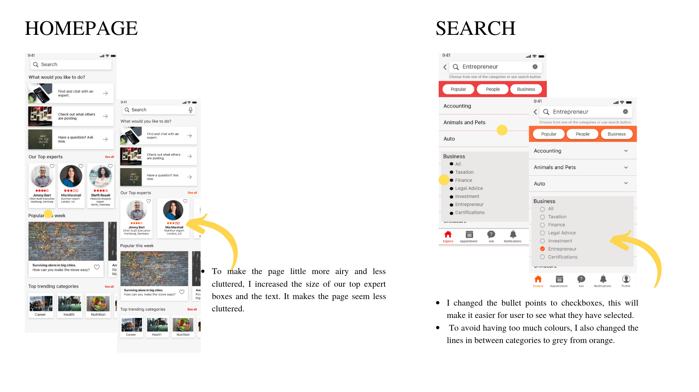
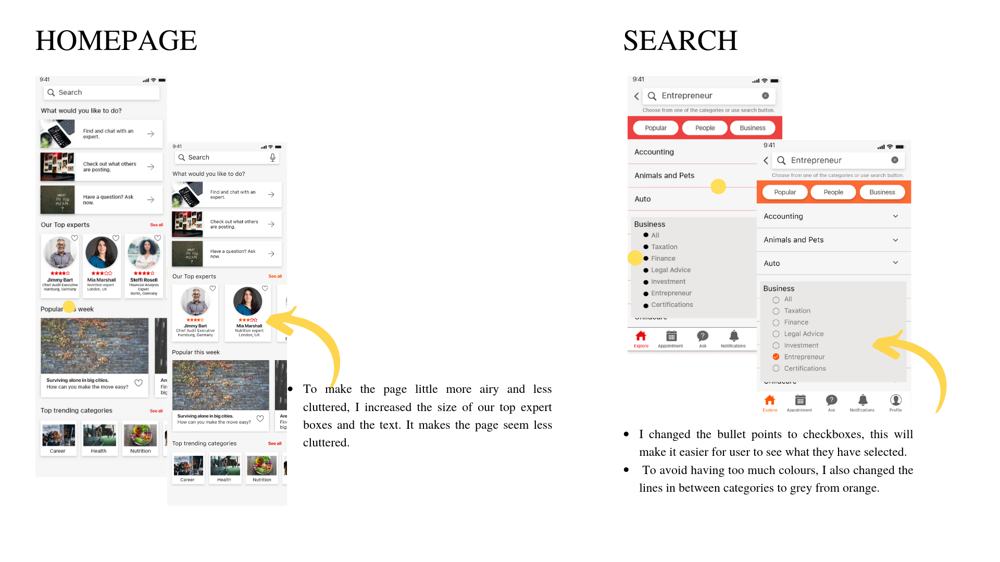

Advizors
An expert booking app
Since it was part of my CareerFoundry UX course, I was responsible for the overall strategy, the UX research, the information architecture, user testing & interaction design. I started the design from scratch, ending up creating an innovative working prototype with user experience as the core of my design.
Problem Statement
Our achievement-oriented users need a way to instantly connect with competent professionals who are experts in their field to solve their personal and business needs.
We will know this to be true when we gain increasing number of users every month and positives reviews.
Challenge
The biggest challenge for me was to find a balance between, the nature of the app which required it to ooze professionalism. at the same time to create an app which was simple, playful and functional for the users.
Design Thinking
Design inspiration of this app came from wanting to create a platform for our users and experts which was professional and inviting. With Advizors mykey focus was to create a clean, trustworthy and user friendly application. Rather than creating an app that feels monotonous, I have regarded the best way to navigate and filter content on mobile devices.
Research
Some of the key findings were
- People tend to use the convenient resources like friends, family, networking and Internet before looking for expert help.
- Trust plays big role on their decisions when they need help or advice as all the users first turned to someone reliable for help before seeking out answer elsewhere.
- Users hated that the app was not interactive and engaging, and they lost the motive to use them after some time.
- All the users were willing to pay the experts for their time and effort, the two options were either to pay per session or using subscriptions.
- Users review was one of the key components that made experts trustworthy to the users. But at the same time certification, qualification, experience were also equally relevant.
Based on these findings, I decided to add social features where users can read blog posts or reply to question from other users. This feature will contribute to the consistent traffic, opportunity to build the trust and to preview the app for potential users.
Next to portray my target users I created 2 user personas. Alongside, I also created a mental model and user journeys for the personas, so that the user audience could be at the forefront of my mind during design process.

Design
Using the user personas and their user journeys, I created user flows for 3 main features of the app. It helped me to discover and layout the pages and screens that my personas needed in order to meet their goals.
This step was furthered sharpened and refined using sitemap and card sorting.
Card sorting helped me structure the information within the app and pushed me to think further from the users point of view and their expectations. To adjust to these findings I refined the sitemap and combined search and find options as one. As the primary function of the app is to find an expert, I paid extra attention to make sure that search was accessible from all the pages and was easier for users to find it. Topics like favorites, ask a question, review and delete account were relatively hard to sort out due to varying opinions and smaller group of participants.
Sketches and Wireframes
Now that I had laid my foundations on organizing information in my app. It was time to sketch out the initial ideas by creating low fidelity wireframes. With every transition from low to mid fidelity (Balsamiq) and then to High Fidelity (Adobe Xd), I was able adjust and update my design to improve usability. First versions of high fidelity prototype was used to conduct user testing.
Users were required to search and book an expert and leave a review for their past appointments.
Low Fidelity Wireframes
Mid Fidelity Wireframes
High Fidelity Wireframes
First version of high fidelity wireframes. This is the version I used for user testing. At this moment the wireframes were fairly basic and was lacking character style.

After the first version of high fidelity wireframes was ready it was time to conduct usability test test and collect feedbacks from the users. Before conducting the usability test I created a test plan and script and recruited 6 potential participants from various backgrounds. Participants loved the idea of having an expert app but at the same time found it hard to interact with the prototype as the pages were still basic. The major hurdle amongst the participants was to leave a review. Majority of the participants had problem performing this task. So this was major issue I focused on my next iterations.
All the results were then analyzed using second round of affinity mapping. Followed by using rainbow spreadsheet to organise information and propose possible solutions.
The Iterations happened in 2 phases.
Phase 1
Phase 1 was updating the wireframes after the user test and focused on improving design of 5 errors. Here my prime focus was to improve the layout of the pages and make it clean for the users. The major change at this phase was on the homepage and search. Iterations began with finalising the colors for app and updating the pages. For Advizors I choose blue and orange colour scheme. Orange colour normally represents enthusiasm, encouragement and happiness while blue represents stability, tranquility, trust which is the feelings I wanted to evoke in our users when they see and use the app. I also conducted preference testing with 2 versions of introduction page.
Phase 2 of iterations was done after design collaboration.
Preference Testing

13 participants replied to the preference test I sent out. Main differences between 2 screens was with the placement of the background image. 86% (12 participants) preferred version 1 and only 7% (1 participant) version 2. Participants mentioned that the background picture made the page easier to relate and represented the app. I further polished the design by updating the picture and layout of the page. The new picture represents our users and the story app is trying to convey.
Refine and Present
Phase 2
This phase began with polishing the pages using visual design principles and grids to improve UX, UI and overall usability of your app. I also collaborated with other CareerFoundry UX students to collect peer feedbacks on my design. Most of the comments were positive and participants liked the UX, pictures, illustrations. I had used a darker shade of orange for this testing and it was pointed out that dark orange strikes out as red and represents error which is not the best option for this app.
 


Final Design